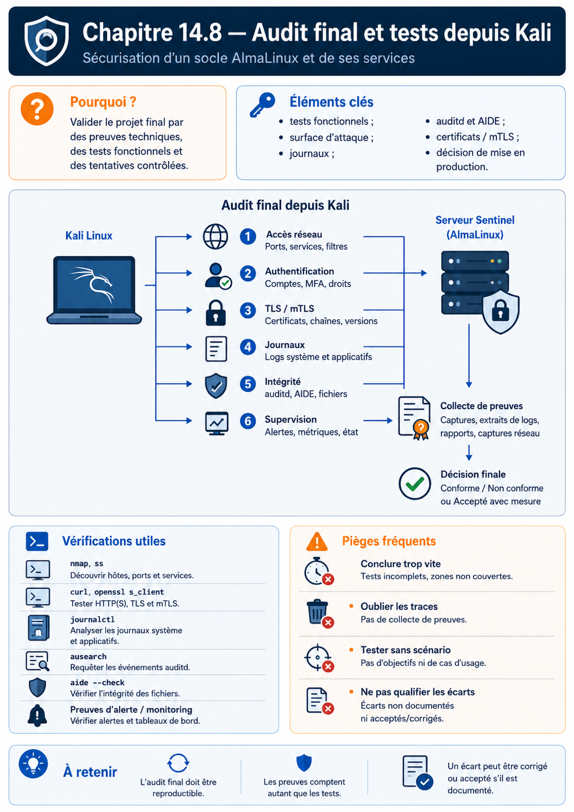

Chapitre 14.8 — Audit final et tests depuis Kali
Campagne 14 — Projet final
« L'audit final ne cherche pas un système parfait : il cherche une décision défendable, reproductible et appuyée par des preuves. »
Vous êtes ici
PARTIE III — Mise en situation
Campagne 14 — Projet final
14.1 Déployer Sentinel sur une AlmaLinux minimale ✔
14.2 Sécuriser l'hôte ✔
14.3 Intégrer FreeIPA ✔
14.4 Déployer avec Ansible ✔
14.5 Packager avec RPM ✔
14.6 Conteneuriser avec Podman ✔
14.7 Superviser et auditer ✔
► 14.8 Audit final et tests depuis Kali
Objectifs pédagogiques
À l'issue de ce chapitre, vous serez capable de :
- exécuter une campagne d'acceptation reproductible depuis un état connu ;
- distinguer tests fonctionnels, contrôles de configuration et tentatives de sécurité autorisées ;
- vérifier les refus réseau, TLS, mTLS, HBAC,
sudoet Sentinel à la bonne couche ; - corréler les actions depuis Kali avec journaux, Audit, AIDE, métriques et alertes ;
- qualifier les écarts selon leur risque et leur caractère bloquant ;
- produire une décision finale de mise en production accompagnée d'un dossier de preuves.
Pourquoi ce chapitre existe
Un projet de sécurité n'est pas terminé lorsque toutes les commandes ont réussi une fois. Il faut pouvoir répondre à une question plus exigeante : un autre ingénieur peut-il reprendre le même périmètre, rejouer les tests et arriver à la même conclusion ?
L'audit final se déroule uniquement dans le laboratoire Sentinel et sur les machines appartenant à l'apprenant. Kali sert de point d'observation externe autorisé ; il ne constitue pas une autorisation de tester un réseau tiers.
Définir le périmètre avant de tester
Le rapport commence par un cartouche :
version Sentinel : 1.1.0
commit / source :
mode natif qualifié : installation classique ou RPM
orchestration : Ansible oui/non
variante Podman qualifiée : oui/non
hôte Sentinel :
hôte FreeIPA :
hôte observabilité :
hôte Kali :
date UTC :
auditeur :
fenêtre de test :
Ajoutez la matrice de flux approuvée et la liste des scénarios autorisés. Tout test hors périmètre est reporté, pas improvisé.
La chaîne de décision
La décision ne dépend pas du nombre de tests verts. Un seul écart critique — par exemple une clé privée exposée ou un accès d'administration ouvert sans contrôle — peut suffire à conclure NO-GO.
Phase 0 — Geler l'état de qualification
Avant les tests :
date -u
hostnamectl
systemctl --failed
getenforce
sudo firewall-cmd --get-active-zones
sudo ss -lntup
Pour un déploiement RPM :
rpm -q sentinel
rpm -V sentinel
Pour Podman :
podman ps
podman inspect sentinel
Pour Ansible, conservez le commit et le dernier second passage changed=0.
Critère : aucune dérive inexpliquée ne doit être ignorée avant l'audit.
Phase 1 — Tests fonctionnels
Avec un client mTLS autorisé, exécutez les quatre contrats HTTP existants.
curl --cacert CA.crt --cert agent01.crt --key agent01.key \
https://sentinel.sentinel.lab/health
curl --cacert CA.crt --cert agent01.crt --key agent01.key \
https://sentinel.sentinel.lab/ready
curl --cacert CA.crt --cert agent01.crt --key agent01.key \
https://sentinel.sentinel.lab/api/v1/status
curl --cacert CA.crt --cert agent01.crt --key agent01.key \
https://sentinel.sentinel.lab/metrics | head
Résultats attendus :
| Test | Attendu |
|---|---|
/health |
HTTP 200 et version cohérente |
/ready |
HTTP 200 lorsque la dépendance d'état est saine |
/api/v1/status |
état JSON lisible |
/metrics |
format Prometheus et familles 1.1.0 |
Une socket ouverte n'est pas une preuve fonctionnelle suffisante.
Phase 2 — Surface réseau depuis Kali
Commencez par l'inventaire DNS et les ports explicitement autorisés :
dig +short sentinel.sentinel.lab A
nmap -Pn -p 22,443,8443,9100 SENTINEL_IP
Adaptez la liste aux ports de la matrice réelle. Le but est de vérifier quelques décisions connues, pas de lancer un scan indiscriminé.
Le rapport qualifie chaque port :
port :
état observé :
état attendu :
service local correspondant :
règle Firewalld correspondante :
décision : conforme / écart
Exemple attendu dans une architecture où seul 443 est publié aux clients :
- 443 : accessible selon la source autorisée ;
- 8443 : non accessible directement depuis Kali ;
- 9100 : réservé à Prometheus, refusé depuis Kali ;
- 22 : selon la segmentation d'administration, refusé depuis la zone de test ou limité à un bastion.
Phase 3 — Tests TLS et mTLS
A. Sans certificat client
curl --cacert CA.crt https://sentinel.sentinel.lab/health
Attendu : échec de négociation lorsque mTLS est obligatoire.
B. CA inconnue
Utilisez uniquement un certificat de laboratoire émis par une CA témoin non approuvée.
Attendu : échec TLS.
C. Certificat fiable mais non autorisé
curl --cacert CA.crt --cert agent02.crt --key agent02.key \
-o /dev/null -sS -w '%{http_code}\n' \
https://sentinel.sentinel.lab/health
Attendu : 403.
D. Certificat autorisé
curl --cacert CA.crt --cert agent01.crt --key agent01.key \
-o /dev/null -sS -w '%{http_code}\n' \
https://sentinel.sentinel.lab/health
Attendu : 200.
Phase 4 — Identités d'administration
Sur le périmètre FreeIPA :
ipa hbactest --user=alice --host=sentinel.sentinel.lab --service=sshd
sudo -l -U alice
Puis vérifiez les opérations prévues depuis une session Alice :
sudo systemctl status sentinel.service
sudo systemctl restart sentinel.service
sudo systemctl restart sshd.service
Attendu : les opérations Sentinel définies sont autorisées, la dernière commande est refusée.
Testez aussi un utilisateur hors HBAC depuis une session de laboratoire dédiée. Le refus ne doit pas nécessiter de désactiver la voie de secours administrative.
Phase 5 — Confinement et intégrité
SELinux
getenforce
sudo ausearch -m AVC,USER_AVC -ts recent
Tout AVC inattendu est qualifié. Permissive ou Disabled constitue un écart majeur par rapport au projet.
systemd ou Podman
Pour le service natif :
systemctl show sentinel.service \
-p User -p NoNewPrivileges -p ProtectSystem -p CapabilityBoundingSet
Pour Podman :
podman exec sentinel id
podman exec sentinel grep '^Cap' /proc/1/status
podman exec sentinel sh -c 'touch /usr/probe' || true
RPM
rpm -V sentinel
AIDE
sudo aide --check
Une différence non expliquée est un écart, pas une invitation à mettre à jour la baseline.
Phase 6 — Tentative contrôlée de modification
Modifiez un objet témoin couvert par Audit ou créez/supprimez un fichier de probe sous un chemin surveillé. Évitez d'altérer une clé ou un binaire de production pédagogique uniquement pour générer une trace.
sudo touch /etc/sentinel/.final-audit-probe
sudo rm /etc/sentinel/.final-audit-probe
Recherchez :
sudo ausearch -ts recent -k sentinel_config -i
Puis vérifiez que les journaux utiles ont été centralisés. Le rapport corrèle l'heure de l'action, l'identité, l'événement Audit et, lorsqu'il existe, le message applicatif ou système correspondant.
Phase 7 — Tests d'observabilité
Sur Prometheus :
up{job="sentinel"}
sentinel_build_info
Vérifiez également les règles avec les résultats du chapitre 14.7. Provoquez une courte indisponibilité seulement si elle est prévue dans la fenêtre d'audit, puis observez la séquence :
service arrêté
→ scrape échoue
→ up = 0
→ alerte pending
→ alerte firing après délai
→ restauration
→ alerte resolved
Conservez les horodatages afin de comparer métriques et journaux.
Phase 8 — Vérification de l'automatisation
Si Ansible fait partie du mode final :
ansible-playbook playbooks/site.yml --limit sentinel_servers
Sur le même commit et sans changement d'entrée, le résultat doit rester :
changed=0
failed=0
Un changement inattendu pendant l'audit est une dérive à analyser.
Phase 9 — Vérification du paquet ou du digest
Mode RPM
Conservez :
rpm -qi sentinel
rpm -Kv /chemin/vers/artefact-qualifie.rpm
rpm -V sentinel
dnf info --installed sentinel
Variante Podman
Conservez :
podman image inspect IMAGE_QUALIFIEE
podman inspect sentinel
Le digest en exécution doit correspondre au digest approuvé dans la déclaration Quadlet.
Corréler les preuves
Pour chaque scénario, remplissez une fiche :
ID :
objectif :
heure UTC :
commande / action :
résultat attendu :
résultat observé :
couche concernée :
trace locale :
trace centralisée :
événement audit :
métrique / alerte :
écart : oui/non
retour en état :
Cette structure évite le piège du dossier constitué de captures sans relation entre elles.
Qualifier les écarts
Utilisez une échelle simple et explicitée :
| Niveau | Exemple | Décision par défaut |
|---|---|---|
| critique | secret exposé, accès admin non maîtrisé, contrôle de confiance désactivé | NO-GO |
| majeur | SELinux non Enforcing, mTLS contournable, absence de journalisation essentielle | correction avant production |
| modéré | alerte utile absente mais détection manuelle disponible | plan d'action daté |
| mineur | amélioration documentaire ou ergonomique | backlog |
La sévérité dépend du contexte et de l'impact réel. Justifiez chaque classement.
Risques acceptés
Chaque risque accepté contient :
risque :
actif concerné :
scénario :
impact :
probabilité estimée :
contrôles compensatoires :
propriétaire de l'acceptation :
échéance de réexamen :
Un risque critique ne devient pas acceptable simplement parce qu'il est écrit dans un fichier.
Décision finale
La conclusion prend une des formes suivantes.
GO
Tous les critères obligatoires sont conformes ; les écarts restants sont mineurs ou modérés, possèdent un propriétaire et ne remettent pas en cause les hypothèses de sécurité.
GO CONDITIONNEL
Le service peut être mis en production uniquement avec conditions explicites : contrôle compensatoire actif, échéance courte et propriétaire identifié.
NO-GO
Un contrôle critique ou majeur nécessaire au modèle de menace n'est pas démontré, ou le dossier ne permet pas de reproduire la qualification.
Dossier final de preuves
campagne-14-preuves/
├── 00-inventaire/
├── 01-hote/
├── 02-freeipa/
├── 03-ansible/
├── 04-rpm/
├── 05-podman/
├── 06-observabilite/
├── 07-audit-final/
│ ├── scope.md
│ ├── tests-fonctionnels.md
│ ├── exposition-reseau.md
│ ├── mtls.md
│ ├── identites.md
│ ├── confinement-integrite.md
│ ├── traces-correlees.md
│ ├── automatisation.md
│ ├── artefacts.md
│ └── decision-finale.md
├── incidents/
├── decisions/
└── risques-acceptes.md
Les preuves réelles peuvent rester dans un stockage privé lorsqu'elles contiennent des noms internes, des journaux ou des métadonnées sensibles. Le dépôt public conserve alors des modèles expurgés et les critères.
Contrôle final avant signature
Le dossier doit permettre de répondre oui à chaque question :
- l'architecture et les flux sont-ils connus ?
- l'hôte est-il à jour et durci ?
- SELinux est-il
Enforcinget Firewalld actif ? - les accès humains passent-ils par les identités et délégations prévues ?
- les certificats sont-ils suivis et mTLS distingue-t-il confiance et autorisation ?
- le déploiement Ansible est-il idempotent lorsqu'il est utilisé ?
- le RPM est-il signé, vérifiable et possesseur des fichiers lorsqu'il est utilisé ?
- la variante Podman est-elle rootless, bornée et identifiée par digest lorsqu'elle est utilisée ?
- les journaux sont-ils centralisés ?
- Audit ne perd-il pas d'événements pendant la qualification ?
- AIDE correspond-il à une baseline approuvée ?
- Prometheus collecte-t-il les métriques réelles de
1.1.0? - les alertes principales ont-elles été exercées ?
- les tests depuis Kali produisent-ils les succès et refus attendus ?
- les écarts et risques acceptés ont-ils un propriétaire ?
- le retour arrière a-t-il été documenté pour chaque mode de livraison ?
Jalon Sentinel — plateforme qualifiée
État de départ
Sentinel 1.1.0 possède le contrat applicatif final disponible dans le dépôt.
Besoin
Démontrer que le produit et son infrastructure peuvent être installés, sécurisés, industrialisés, observés et audités de bout en bout.
Modification
Le code Python reste inchangé. La campagne versionne les décisions d'architecture, les configurations, les artefacts de livraison et les preuves.
Compatibilité
Les CLI, routes et métriques de 1.1.0 sont conservées. Les variantes native et Podman doivent présenter le même contrat fonctionnel attendu.
Preuves
Le dossier final, la matrice d'acceptation, les refus contrôlés, les traces corrélées et la décision GO, GO CONDITIONNEL ou NO-GO constituent le jalon.
Synthèse
- l'audit commence par un périmètre et un état gelé ;
- chaque test possède un résultat attendu et une trace recherchée ;
- les refus TLS, applicatifs, réseau et d'administration doivent être attribués à la bonne couche ;
- RPM, Ansible et Podman sont vérifiés selon le mode réellement utilisé ;
- un écart est qualifié et possède un propriétaire ;
- Sentinel reste en
1.1.0: le projet final qualifie l'assemblage plutôt que d'inventer une version2.0.0.
Navigation
← 14.7 — Superviser et auditer · Sommaire de la formation →
Schéma récapitulatif
